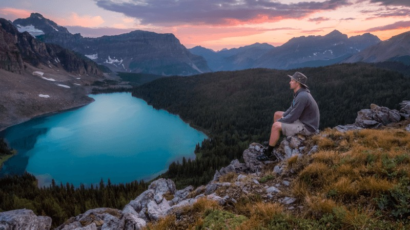
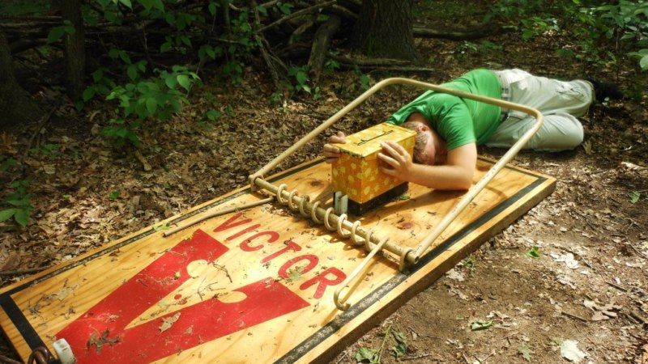

Have you ever wanted to experience adventure like never before?
A new hobby that you never knew about, Places that you never knew existed, sights that are breathtaking, friendship that could last a lifetime?
Well, I am about to introduce you to something that you might wonder how you never found out about it.
Geocaching is the hobby that will change your life forever. I mean it sure changed my life for the good.

What makes geocaching so fun?
I first got involved with geocaching when I was 14 years old.
I was at summer camp with my boy scout troop when I was researching what merit badges I wanted to earn.
There was one merit badge that caught my eye: geocaching. I had no idea that that moment would have changed my life for the better.
Geocaching is a worldwide treasure hunting game.
Basically, you use coordinates downloaded to an app on your phone to navigate to a location.
Once you arrive at that location, you search all around you for a hidden container in the woods.
Once you find that container, you open it. Inside it are little trinkets of value & a logbook that you sign to claim your visit.
If you take something inside the geocache, you are asked to leave something in return.
When I first started geocaching, I couldn't find anything, even the easy ones. I needed tons of help to even find one geocache.
Now, I can find most of them without any trouble at all. Throughout my journeys geocaching, I was taken to some really amazing places.
Sometimes, I get a really beautiful view. Other times, it is the really well designed container that makes the journey more exciting.
The geocaching community goes out of their way to design really neat containers.
They can be made to look like anything.
Sometimes I find a fake birdhouse, other times a fake rock, other times a fake pinecone, I might even find a fake bee's nest.
But what really makes the geocaching journey complete is the friendship made along the way.

Conclusion
Geocaching might not interest you as much as it interested me.
But even if it might not seem fun, you should still at least give it a shot.
I mean, who knows, once you find your first geocache, you might even become hooked.
I mean I sure became hooked after finding my first one. It even drove me to keep finding more and more.
As geocaching has shown me, sometimes one moment can change your life in unexpected ways. Geocaching might even change your life too.